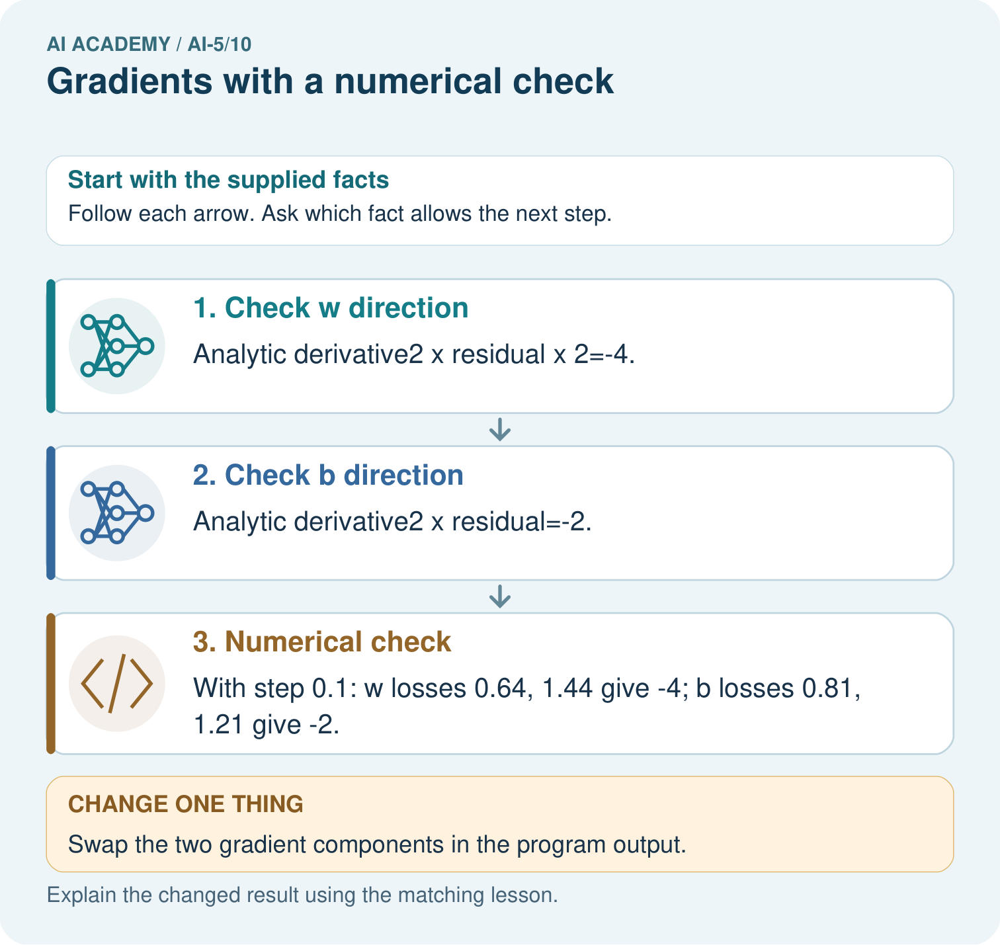

AI Academy · Level 5 · Grade 10 · Week 10 · Teacher guide
Gradients with a numerical check
Learn to understand, design, build, test and explain AI systems responsibly.
Project: Image-pattern Network Investigation
Teacher guide · 1 of 6
Prepare the purpose, prerequisites and materials
Teach the learning cycle
Primary target: Estimate one partial derivative while other parameters stay fixed
| Session | Sequence and minutes | Resources |
|---|---|---|
| Session 1 · Understand · 45 min | 0–7: recall and prerequisite; 7–15: inspect the concrete case and predict; 15–30: teacher models the worked trace; 30–40: learners explain a step using the text and visual; 40–45: check the core idea. | Sections 1–6; record the brief recall in the workbook. |
| Session 2 · Practise · 45 min | 0–5: retrieve the procedure; 5–15: W2 completion practice; 15–23: explain and check with a partner; 23–30: each learner answers the misconception check; 30–40: targeted reteaching or a harder variation; 40–45: prepare the investigation. | Sections 7–10; use the matching workbook W2 and misconception check. |
| Session 3 · Investigate and transfer · 45 min | 0–5: retrieve the decision rule; 5–20: investigate or trace; 20–30: start the independent case; 30–38: connect the project; 38–43: act on feedback; 43–45: plan the return check. | Sections 9 and 11–14. Give extra time to finish the full task set; use Section 15 when the week includes a coding lab. |
This is a starting allocation of 135 minutes, not a validated duration. Preserve all named topics. Schedule extra time for connected examples, the full investigation, independent cases and project building. Repeated copies of a case share one recorded attempt; they are not new evidence.
Retrieval answer guidance
Slopes and local change
Without opening the old lesson, explain one key idea from Slopes and local change. Give an example and a mistake that the idea helps you avoid.
Look for: Calculate an average rate of change over a stated interval
Reference example, not the only acceptable wording: Teacher explanation: Average slope is (0 - 4) / 2 = -2. The local slope at 2 is zero. They describe different locations or intervals.
Parameters and architecture
Without opening the old lesson, explain one key idea from Parameters and architecture. Give an example and a mistake that the idea helps you avoid.
Look for: Distinguish architectural choices from parameter values
Reference example, not the only acceptable wording: Teacher explanation: There are 8 weights and 2 biases, total 10.
Activation functions
Without opening the old lesson, explain one key idea from Activation functions. Give an example and a mistake that the idea helps you avoid.
Look for: Trace identity ReLU and sigmoid on a numerical score
Reference example, not the only acceptable wording: Teacher explanation: Identity gives -2, 0, 2; ReLU gives 0, 0, 2. ReLU retains the positive score itself; it is not a step classifier.
Use two 45-minute sessions to separate coordinate probes from combined changes. The first gradient check is deliberately an affine model with squared loss, avoiding hidden-layer calculus. Introduce the chain-rule reasoning in words before showing the compact formula.
Outcomes
Estimate one partial derivative while other parameters stay fixed
Assemble a gradient in a declared parameter order
Compare numerical and formula based gradients with a tolerance
Preparation
Printed lesson and workbook; paper and pencil
Calculator and optional local Python 3 editor; no packages or AI accounts needed
Use the fictional examples supplied; prepare the fresh retry before class
Prerequisite answer
The two evaluation points lie one step on either side of the centre, so their separation is two steps.
End goal for the pictorial case
By the end, I can explain gradients with a numerical check using a traced example and a stated limitation.
This added worked case illustrates the week’s main idea. Retain all original and connected topics; schedule its practice within the teaching cycle.
Teacher guide · 2 of 6
Explain and model the mechanism
Use one example with input x = 2 and target t = 3. The model predicts y = wx + b, and loss L(w, b) = (2w + b - 3) squared. At w = 1, b = 0, prediction is 2, residual is -1 and loss is 1. There are two parameters in order [w, b].
To estimate the partial slope for w, change w only and keep b = 0. To estimate the partial slope for b, change b only and keep w = 1. Moving both at once measures change along a combined direction; it does not isolate either partial derivative.
The gradient is [-4, -2] in order [w, b]. Both entries refer to the same original parameter vector, not to a partially updated model.
The helper assumes finite numerical inputs and a positive nonzero step. The formula follows the squared-loss rule: local loss change is twice the residual times the prediction sensitivity. Changing w by a small amount changes prediction twice as much here; changing b changes prediction by the same amount.
Exact floating-point equality is not required. Record the step and a tolerance, then try more than one parameter setting. A passing numerical check supports agreement for those tested points; it does not prove all possible inputs.
| Term | Meaning |
|---|---|
| Partial derivative | A local slope with respect to one parameter while others are held fixed |
| Gradient | The ordered vector of partial derivatives of a scalar function |
| Finite difference | An estimate of change computed from nearby function values |
| Tolerance | A stated allowance for numerical disagreement |
Two separate probes at one parameter vector
Guided: prediction 1, residual -2, loss 4, gradient [-8, -4]. Exit: changing both parameters measures a directional change; each partial must vary just its own coordinate while holding the others fixed.
Model the reasoning aloud
Use the complete worked example below before asking learners to complete W2. Reveal a small part, invite a prediction, then explain the deciding step. These teacher notes contain solutions; do not reveal the independent case answer during modelling.
Two separate probes at one parameter vector
| Thinking move | Teacher prompt |
|---|---|
| Plan | What is given? What is the question? Which procedure fits these facts? |
| Do | Point to each input and intermediate step in the worked trace. Name the rule that allows the next step. |
| Check | Does the output answer the question? Which assumption or limitation prevents a larger claim? |
Use the diagram and verbal explanation together. Ask learners to match a sentence to a specific visual step; do not assign learners fixed visual or auditory learning styles.
A pictorial worked case: Gradients with a numerical check
Check each coordinate of a gradient while holding the other parameter fixed.
The facts we will use
Model y=2w+b, target 3. At [w, b]=[1, 0], y = 2, residual y-target=-1; loss is residual².
All inputs and outcomes in this worked example are invented classroom data; no real model run is claimed.

Read the picture one step at a time
Why this result follows
A gradient lists the slope for each parameter, in a declared order. Changing w by a small amount changes the prediction twice as much as changing b by the same amount. That explains the different derivative magnitudes. Perturb one coordinate while holding the other fixed, then compare the numerical slope with its analytic counterpart.
What this example does not establish
The exact agreement occurs for this quadratic toy case; finite differences in larger models involve rounding and step-size limits.
Change one thing in the pictured case
Change: Swap the two gradient components in the program output.
Prediction: The coordinate-wise numerical check exposes the mismatch.
Reason: The w perturbation changes y twice as strongly as the same b perturbation.
Ask while showing the picture
Cover the result. Ask learners to name the inputs and predict the next step. Uncover one step, connect the icon to the actual procedure, and explain its evidence. Then change the supplied condition and compare. The picture is a representation; it does not document execution of a real AI model.
Teacher guide · 3 of 6
Demonstrate and guide practice
| Time or stage | Teacher action |
|---|---|
| Session 1 start to 7 minutes | Retrieve the symmetric denominator and compute the initial prediction and residual. |
| 7 to 18 minutes | Probe w alone with b fixed; record the two losses and slope. |
| 18 to 32 minutes | Probe b alone and assemble [-4, -2]. Complete W1 and W2. |
| 32 to 45 minutes | Trace the optional numerical checker and the guided [0, 1] case. |
| Session 2 start to 8 minutes | Use W3 to distinguish a combined direction from two partial derivatives. |
| 8 to 20 minutes | Discuss the ReLU corner in W5 and a stated numerical tolerance. |
| 20 to 35 minutes | Collect W4 independently, requiring both pairs of losses and coordinate order. |
| 35 to 45 minutes | Use the exit response and fresh retry, then connect local gradient evidence to next week. |
Use the worked example in Sections 3 and 6. Collect a prediction before revealing its result; ask the learner to point to each intermediate fact.
Provide separate w-probe and b-probe tables. Extension: at the lesson model [1, 0], test steps 0.1, 0.01 and 0.001 and report absolute disagreements from [-4, -2], without claiming universal tolerance guarantees.
Reduce help deliberately
Completion task: A w probe has losses 1.44 and 0.64 at 0.9 and 1.1 with b fixed. A learner divides their difference by 0.1. Correct the result.
Teacher check: Teacher explanation: The interval is 0.2. (0.64 - 1.44) / 0.2 = -4, not -8.
Start by identifying the given inputs together. Leave the intermediate steps blank. If needed, model one step, then withdraw that help on the next step. Move to a full trace only when the partial trace is understood. For partners, alternate explainer and checker; collect a response from every learner before discussion.
Individual reasoning check
Use the worked case for Gradients with a numerical check. Proposed explanation: “The gradient is one scalar”. Decide whether this explanation is supported. Point to the step or supplied fact that decides; explain your repair if needed.
Expected correction: It has one entry per parameter for a scalar loss, in a stated order.
Collect explanations, not only yes/no votes. If a misunderstanding is common, re-model the relevant step for the class. If it affects a few learners, give a short targeted group explanation while others solve a more demanding variation.
Pictorial practice question
Why should the numerical checks perturb one coordinate at a time? Point to the relevant step in the picture, then write the changed result and the rule or evidence that supports it.
Reasoned teacher answer
They estimate a partial derivative. Changing both coordinates would mix their effects and would not independently verify [-4,-2]. Changed-case check: The coordinate-wise numerical check exposes the mismatch. The w perturbation changes y twice as strongly as the same b perturbation.
Changed-case reasoning: The coordinate-wise numerical check exposes the mismatch. The w perturbation changes y twice as strongly as the same b perturbation.
Collect each learner’s explanation before discussion. Use the first missing connection between input, deciding step and result to choose support. This question is worked-case practice, not fresh mastery evidence.
Teacher guide · 4 of 6
Run the investigation and diagnose misconceptions
The gradient is one scalar: It has one entry per parameter for a scalar loss, in a stated order.
Use the updated weight for the bias probe: Both entries must refer to the same current parameter vector.
A symmetric value defines the derivative at any corner: Left and right slopes can differ; the ReLU example exposes this.
Use Section 9 for the evidence ledger. Add a boundary or missing-input case and record the expected response before checking. More successful repeats of one case do not establish wider coverage.
Match the support to the first error
| What the response shows | Next teaching action |
|---|---|
| Missing or misread facts | Read the case aloud, mark supplied versus unknown facts, and let the learner restate it. |
| Wrong procedure | Return to the deciding step in the worked case. Contrast it with the proposed incorrect explanation. |
| Arithmetic or implementation error | Trace intermediate values or lines; preserve the first mismatch and retry that step. |
| Correct result without a reason | Ask for a trace and a changed case before marking independent understanding. |
| An unsupported wider claim | Ask which supplied evidence supports the claim and which further observation would be needed. |
Offer an oral explanation, drawing, enlarged visual or fewer examples when that removes a reading/writing barrier. Keep the same reasoning goal. Stretch secure learners by changing a boundary or assumption and asking them to defend the effect, not simply by assigning more of the same questions.
Teacher guide · 5 of 6
Assess and explain the answers
Guided and exit questions
Guided: prediction 1, residual -2, loss 4, gradient [-8, -4]. Exit: changing both parameters measures a directional change; each partial must vary just its own coordinate while holding the others fixed.
W1 Recover a gradient
For the lesson model at w = 1 and b = 1, calculate prediction, residual, loss and gradient.
Teacher explanation: Prediction 3, residual 0, loss 0, gradient [0, 0].
W2 Catch a denominator error
A w probe has losses 1.44 and 0.64 at 0.9 and 1.1 with b fixed. A learner divides their difference by 0.1. Correct the result.
Teacher explanation: The interval is 0.2. (0.64 - 1.44) / 0.2 = -4, not -8.
W3 Separate a direction from a coordinate
Starting at [w, b] = [1, 0], both coordinates move by plus or minus 0.1 together. Compute the symmetric slope and explain why it is not either partial derivative.
Teacher explanation: Residuals are -1.3 and -0.7; losses 1.69 and 0.49. Slope is -6. It measures the combined direction [1, 1], equal here to the sum of partials -4 and -2.
W4 Check a new example independently
Use x = 3, target 2 and y = wx + b at w = 0, b = 1. With step 0.1, calculate both numerical partials. Compare with [2 times residual times x, 2 times residual].
Teacher explanation: Residual -1 and loss 1. w probes give predictions 0.7 and 1.3, losses 1.69 and 0.49, partial -6. b probes give predictions 0.9 and 1.1, losses 1.21 and 0.81, partial -2. Formula gradient is [-6, -2].
W5 Recognise a corner
Compute the symmetric difference of ReLU at zero with step 0.1. Explain why this does not prove a derivative exists there.
Teacher explanation: The value is 0.5. The left slope is 0 and right slope is 1, so the slopes disagree and the derivative at zero does not exist.
Independent assessment and fresh retry
W4 requires numerical and formula gradients [-6, -2] with losses shown. Fresh retry: x = 1, target 4, w = 2, b = 1 gives residual -1 and gradient [-2, -2]. Step 0.1 in either coordinate gives losses 1.21 and 0.81. Require the fixed coordinate to be named.
Assess independent transfer
Selected case: Use x = 3, target 2 and y = wx + b at w = 0, b = 1. With step 0.1, calculate both numerical partials. Compare with [2 times residual times x, 2 times residual].
Selected case answer
Teacher explanation: Residual -1 and loss 1. w probes give predictions 0.7 and 1.3, losses 1.69 and 0.49, partial -6. b probes give predictions 0.9 and 1.1, losses 1.21 and 0.81, partial -2. Formula gradient is [-6, -2].
| Dimension | Evidence required |
|---|---|
| Explanation | Names the applicable idea or procedure and ties it to the supplied facts. |
| Trace and result | Preserves the given inputs and shows the relevant intermediate steps; distinguishes a prediction from an observed execution. |
| Limits | States the assumptions, missing evidence or conditions under which the result would change. |
Record each dimension as not yet, with support, or independent. Accept a valid alternative procedure with a defensible trace. Do not penalise an honestly recorded model failure if the learner correctly explains its evidence and limits.
Feedback that the learner uses
Name the earliest unsupported step and give one action to repair it. Have the learner make that repair now and explain why. Then assess the relevant skill on a fresh, fully specified case. Confirm it was not previously practised with feedback; solve and check the new case before assigning it. A follow-up design prompt is a starting brief, not automatically an equivalent test.
Teacher guide · 6 of 6
Connect the project, support and next lesson
Add a labelled gradients with a numerical check evidence sheet to Image-pattern Network Investigation. Show how you can estimate one partial derivative while other parameters stay fixed. Use the supplied fictional case and keep its inputs, intermediate steps, calculation or prediction, and limitation. Connect this record to last week’s record; a matching answer without a trace is insufficient.
Provide separate w-probe and b-probe tables. Extension: at the lesson model [1, 0], test steps 0.1, 0.01 and 0.001 and report absolute disagreements from [-4, -2], without claiming universal tolerance guarantees.
Week 11 applies gradients to simultaneous parameter updates.
Retain the project ledger and assess a changed case after support. Check the relevant prerequisite before carrying this component forward.
Plan the delayed return
Suggested return points in this level: ai-5/11, ai-5/13, ai-5/16. Use actual classroom dates, adjusting for holidays and gaps. One, three and six teaching weeks are scheduling choices, not a claimed optimal spacing.
At a delayed check, ask for the idea from memory and a changed application. Compare with the earlier independent response and record support used. For a new level, revisit the previous capstone before checking the new prerequisites.
| Record | Teacher evidence |
|---|---|
| Learner code and date | |
| Concept and case used; prior exposure | |
| Explanation / trace / limits | |
| Support and first repair | |
| Changed case and delayed outcome | |
| Next teaching action |
Use the evidence to choose reteaching or the next step. A completed page, confidence rating or attractive project does not by itself demonstrate understanding.
Project evidence from this case
For your Image-pattern Network Investigation, save the input, procedure, observed result and limitation of this check. Label this worked example as practice; use a different, previously unreviewed case when checking independent understanding.